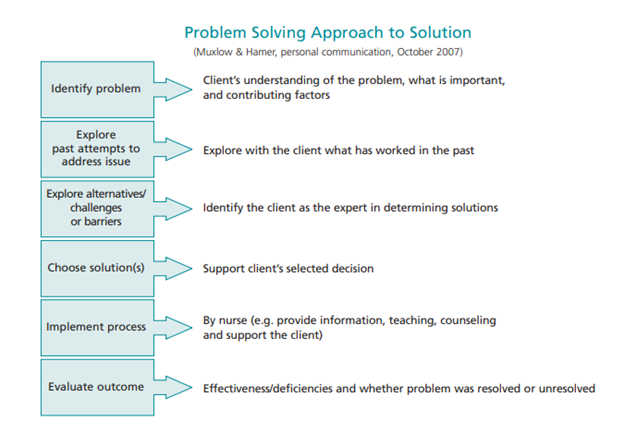
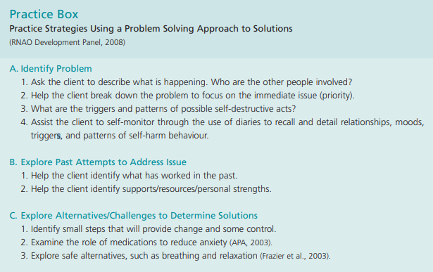
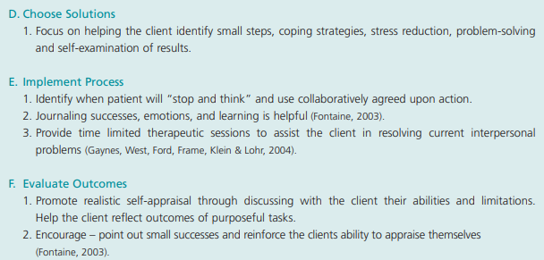

Warning signs similar to symptoms of depression:
Individuals may present as:
The-Mental-Health-Continuum.pdf (openingminds.ca) (MHCC,2020)
Mental health is a continuum with healthy individuals can find themselves experiencing distress, due to stressors) and those with psychiatric diagnosis, with appropriate coping mechanisms, can find themselves living healthy lives. This is important to note when fostering hope for individuals with suicidal ideation.
In the model linked above, the distinction between reacting and injured phase is the persistence of symptoms, with invasive symptoms no longer functioning as an appropriate response to circumstance. Symptoms of injury include:
Protective factors are aspects of the person’s life that gives them reward, meaning or a sense of purpose (RNAO, 2020).
“The nurse will take seriously all statements made by the client that indicate, directly or indirectly, a wish to die by suicide, and/or all available information that indicates a risk for suicide” (RNAO, 2009)
When performing a risk assessment, involve the client, their relationships and medical history.
Interview for suicidal ideation, plan and protective factors Interview Questions for Assessment of Suicidal Ideation and Plan | Nursing Best Practice Guidelines (rnao.ca)
Signs include:
Direct statements: “I am going to kill myself” Indirect Statements : I can’t take it anymore" Indirect expression (Behavioural) (Often sudden): End-of-life planning (arranging a will, giving belongings away, donating body to science, neglect for self- care and relationships) and obtaining lethal means (Storing medications, obtaining firearms)
If suspected: ask! There is no evidence that asking a person directly about self- harm and suicide with increase their risk (RNAO, 2009)
“Are you thinking about ending your life?” “Are you suicidal?” “Do you have a plan to take your own life?” “Do thoughts of death or suicide enter your mind?”
Incorporate professional judgment: incorporate assessment data with findings from family and friends to ensure accurate assessment, monitor for recent changes in behaviour and ensure the safety of the patient (WOHS, 2020)
Ideation:
Behaviour:
History of attempt: Aborted attempt (Stopped themself) or interrupted attempt (By another individual) Controllability: Has the patient aborted an attempt in the past? Do they have adequate/ fair/ poor impulse control? Act: Have they participated in a dangerous/ risk taking behaviours that may have led to their death? (DUI, Overdose) Taken action to acquire lethal means
High risk:
Need of admission with persistent ideation and planning
Low risk:
Every suicide assessment should be documented in a timely manner and include follow-up with appropriate resources and during TOA (RNAO,2020; WOHS, 2020)
Important components at my placement:
Patient Room Form
Ask: Do you know this patient?
Yes:
No:
Meet criteria for eight components of transitional care (Naylor et al, 2017)
SBARR
The SBAR approach to communication
Concise handoff or information to other professionals in the healthcare team:
Situation: immediate/ relevant patient information, Patient (Subjective + Objective data)
Background: Patient History
Assessment: Nursing assessment
Recommendation: What outcome/ action does the does the speaker believe needs to happen
Response feedback: Do you have any questions? Verify understanding
Example:
Hi Dr._, regarding _ your patient in __R, 50 years old with a history of schizophrenia. He decompensated in the community and was admitted from home by his 2 adult daughters. He is experiencing paranoid delusions regarding the police and is irritable. For safety, should the order for chemical restraints be renewed?
Thank you, is there any other information you need from me?
“The nurse works toward establishing a therapeutic relationship with clients at risk for suicidal ideation and behaviour” (RNAO, 2009)
Therapeutic communication is essential for patient centered care and itself is protective against suicide when fostering feelings of hope, being heard, respected and connected (RNAO,2009).
Therapeutic communication involves active listening skills, and positive body language that conveys genuineness and empathy in order to develop trust and engage a client to accurately assess and meet the client’s needs (RNAO, 2020).
In mental health and addictions, agitation and perceived breach of trust from safety interventions, such as increased observation or contacting emergency services, are barriers to a therapeutic relationship (RNAO, 2020).
Empathy vs. sympathy
Utilize open -ended questioning:
Active listening skills
Remain empathetic and objective
Encouraging
Use silence!
Clarifying
Emotional labeling
Use “I” messages
One-to-one communication between the nurse and the client. Due to environmental and social context the message can sometimes be received differently than the speaker meant to convey. In these relationships it is vital that the meeting of communications need to be validated (Potter et al, 2017).
Interpersonal variables: Factors that influence communication between the sender and receiver It is the nurses responsibility to seek out factors that aid in the effectiveness and sensitivity of communication (Potter et al, 2017).
Environmental factors such as comfort, safety, privacy and distractions (noise) interfere with messages sent (Potter et al, 2017).
Patient related factors such as pain, anxiety and medication side effects may also communicate. In the mental health setting the patient’s condition related to insights, delusions and hallucinations can be a barrier to effective communication.
spoken or written word, is unsuccessful if the sender and receiver cannot decode the words they use to communicate and cannot accurately convey a message to one another. The use of interpreters when there is a language barrier and avoiding the use of medical jargon is important when communicating with patients.
Connotative meaning: one word can have several meanings. Nurses need to be purposeful with their language and avoid terms that may be misinterpreted (Potter et al, 2017).
Communicate at an appropriate speed/ pace-> speak slowly and enunciate clearly.
Awkward pauses can be unsettling for patients and speaking deliberately slowly or rapidly can convey an unintended message
Intonation and tone dramatically affect the meaning of a message. It’s also important in mental health to pay attention to the patient’s emotional state.
Clarify: it’s important to practice simple and brief communication to avoid confusion.
Timing: Be appropriate with your communication. Ensure patients are alert, oriented and comfortable when providing health teaching.
Nonverbal communication is often culturally dependent and can determine if something like eye contact is therapeutic or not.
Professional Appearance: includes physical characteristics, facial expression, manner of dress and grooming. Facial Expression: related to affect. Important to be aware of your depression, furrowing your brow or frowning can be taken as a sign of judgment.
Therapeutic Communication Techniques:
Involve purposeful and specific responses to encourage the expression of feelings and ideas.
SOLER
S: Sit facing the patient. This posture indicates that you are there to listen and are interested in what the patient is saying.
O: Keep an open posture (i.e., keep arms and legs uncrossed). This posture suggests that you are receptive (“open”) to what the patient has to say.
A “closed” position may convey a defensive attitude, possibly invoking a similar response in the patient.
L: Lean toward the patient.This posture indicates that you are involved and interested in the interaction.
E: Establish and maintain intermittent eye contact. This behaviour conveys your involvement in and willingness to listen to what the patient is saying. Absence of eye contact or shifting of the eyes indicates that you are not interested in what the patient is saying.
R: Relax. It is important to communicate a sense of being relaxed and comfortable with the patient. Restlessness communicates a lack of interest and also conveys a sense of discomfort that may extend to the patient. Sharing Observations. Nurses make observations by commenting on how the patient looks, sounds, or acts. Stating observations often helps the patient communicate without the need for extension
ask open ended question and state observations and ask for clarificaiton
Empathy is the ability to convey understanding of another person’s reality based on the accurate perception of spoken word. Empathy is expressed when you explore the patient’s perception without judgment and is conveyed when you provide neutral statements to provide validation to the patient’s experience. (Potter et al, 2017)
Sharing hope: Can instill hope and self- confidence by keeping communications positive, encourage goal- setting and aid in problem solving with the patient. Comment on positive aspects of the person’s behavior, performance and response. (Potter et al, 2017) “The nurse fosters hope with the suicidal client.” (RNAO, 2009)
Hopelessness and feelings of inadequacy influence a person’s perception of their ability to improve their circumstances. A strong therapeutic relationship can improve self- worth and hope. (RNAO, 2009)
Providing reassurance
Providing Information: empower patients to make informed decisions and encourage their involvement in their care. Informed decisions are associated with less anxiety and improve a patient’s sense of control.
Paraphrase and Clarify: rephrase a patient’s response and confirm if this is the message they meant to convey, provides the opportunity to address miscommunication or convey understanding.
Summarize: provide a concise review of the interaction and the results of the conversation (future action).
Non therapeutic techniques
Family/ friends of individuals that have died by suicide struggle with their emotional reactiosn and are at an increased risk of suicidal ideation themselves due to shock of the sudden death of a loved one. (MHCC, 2020)
They may feel:
To aid families, implement the therapeutic communication strategies listed above: Listen non- judgmentally to their concerns and avoid cliche responses. Talk about the person who passed in a positive light. Offer information and resources available in the community and document difficult times (Holidays, anniversaries, birthdays) and arrange for support at these times.
“Minimize the feelings of shame, guilt and stigma that may be associated with suicidality, mental illness and addiction” (RNAO, 2009)
Communication, even with the best intentions, can be hindered if someone feels judged. Important to foster respectful environments where individuals feel safe to discuss their experience.
Examples of stigmatizing and respectful language
“Beware of your own negative attitudes, beliefs and behaviours, which may have negative impact on the client.” (RNAO, 2009)
“The nurse provides care in keeping with the principles of cultural safety/cultural competence.” (RNAO, 2009) Culture may inflience how mental health, suicide and death are discussed. In cultures where suicide is a taboo, even though these are protective factors, can indice shame and isolation in survivors or even prevent those experiencing ideaiton from reaching for support. In order to communicate effectively with the patient regarding their values, it’s important that you use the communication skills listed above to help the individual feel safe and free of judgment. (MHCC, 2020)
“The nurse assesses and manages factors that may impact the physical safety of both the client and the interdisciplinary team.” (RNAO,2009)
Restraint policy
“The nurse ensures that observation and therapeutic engagement reflects the client’s changing suicide risk.” Agency Care round policy:
Observation Policy Mental Health and Addictions
Crisis intervention
Observation Policy Mental Health and Addictions
Crisis Intervention for Adults Using a Trauma-Informed Approach: Initial Four Weeks of Management
Crisis Intervention | Nursing Best Practice Guidelines (rnao.ca)
De-escalation
De-escalation Tips | Nursing Best Practice Guidelines (rnao.ca)
Preventing Violence, Harassment and Bullying Against Health Workers
Speaking to individuals experiencing delusions
Steps for Working With Delusions - BC Schizophrenia Society (bcss.org)
Alternative risk assessment
Possible Strategies for Affirming Client’s Self-Worth | Nursing Best Practice Guidelines (rnao.ca) “The nurse works collaboratively with the client to understand his/her perspective and meet his/her needs.” (RNAO, 2009) Utilize effective communication techniques, so the client can convey their perspective and feel understood and supported.
“The literature suggests that no-suicide contracts are frequently employed as assessment and/or management tools by health care professionals despite the lack of empirical evidence to support their use” (RNAO, 2009) These contracts should consist of an agreement within a probable time frame with a contingency plan. These should only be applied in context of the therapeutic relationship.
Contracting for safety:
Strength based questioning and problem solving
Coping with problems by focusing on solutions
“The nurse uses a mutual problem-solving (client nurse) approach to facilitate the client’s understanding of how they perceive his/her own problems and generate solutions.” (RNAO, 2009)
  
Deep breathing:
Deep Breathing (Worksheet) | Therapist Aid
Sleep hygiene:
Medication:
Patient Education - St. Joseph’s Healthcare Hamilton (stjoes.ca)
Medication Information - Valproate Sodium (stjoes.ca)
Goal setting:
Goals Worksheets | Therapist Aid
ECT:
indicated for acutely suicidal patients in specific circumstances (Depression) (RNAO, 2020).
A review of electroconvulsive therapy in suicidality | Mental Health Clinician | Allen Press
Electroconvulsive therapy (ECT) for depression in elderly people | Cochrane
Electroconvulsive therapy for treatment-resistant schizophrenia | Cochrane
Mindfulness interventions:
What are the benefits of mindfulness? (apa.org)
Mindfulness exercises - Mayo Clinic
Benefits of Cognitive behavioural therapy: important for addressing the psychosocial symptoms of borderline personality and schizophrenia.
Cognitive-behavioural therapy (CBT) | CAMH
Dialectical Behaviour Therapy (DBT) | CAMH
Complementary and alternative modalities: manage their suicidal behaviour related to depression, anxiety or a mental illness: herbal remedies, dietary supplements, massages/reflexology, aromatherapy, acupuncture, yoga, meditation and music (RNAO, 2002)
Mental Health Commission of Canada (MHCC). (2020). Crisis response- Caring for others Registered Nurses’ Association of Ontario. (2009). Assessment and Care of Adults at Risk for Suicidal Ideation and Behaviour. Toronto, Canada: Registered Nurses’ Association of Ontario.
Naylor, M. D., Shaid, E. C., Carpenter, D., Gass, B., Levine, C., Li, J., Malley, A., McCauley, K., Nguyen, H. Q., Watson, H., Brock, J., Mittman, B., Jack, B., Mitchell, S., Callicoatte, B., Schall, J., & Williams, M. V. (2017). Components of Comprehensive and Effective Transitional Care. Journal of the American Geriatrics Society, 65(6), 1119–1125. https://doi.org/10.1111/jgs.14782
Swan, J. (2017). Mental Health Crises Intervention and Support for Patients. Sacramento, US: Wild Iris Medical Education.
William Osler Health System. (2020). Module 1: Suicide Risk Understanding and Assessing